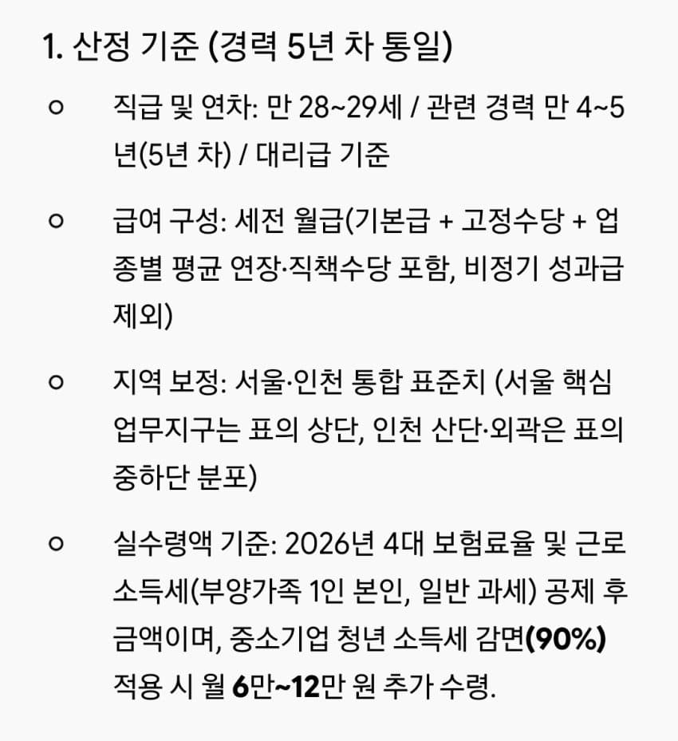
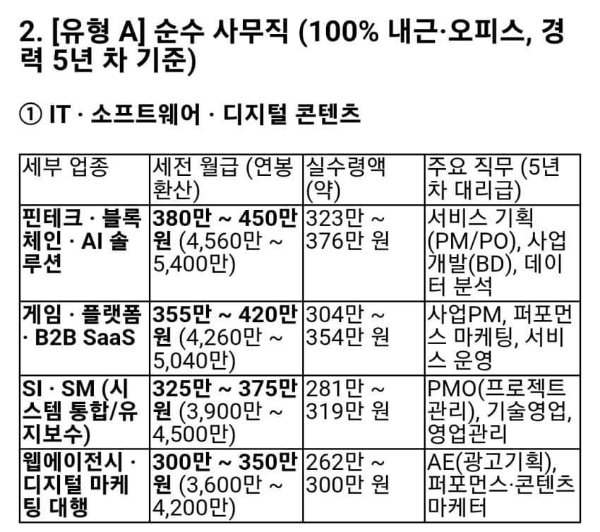
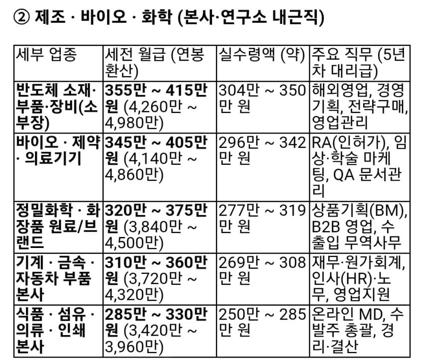
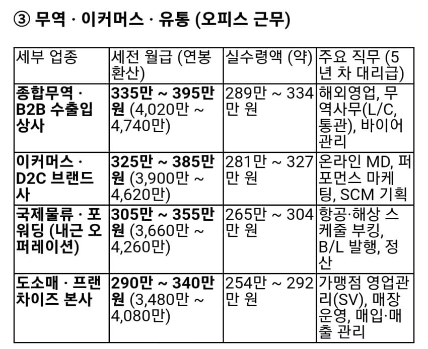
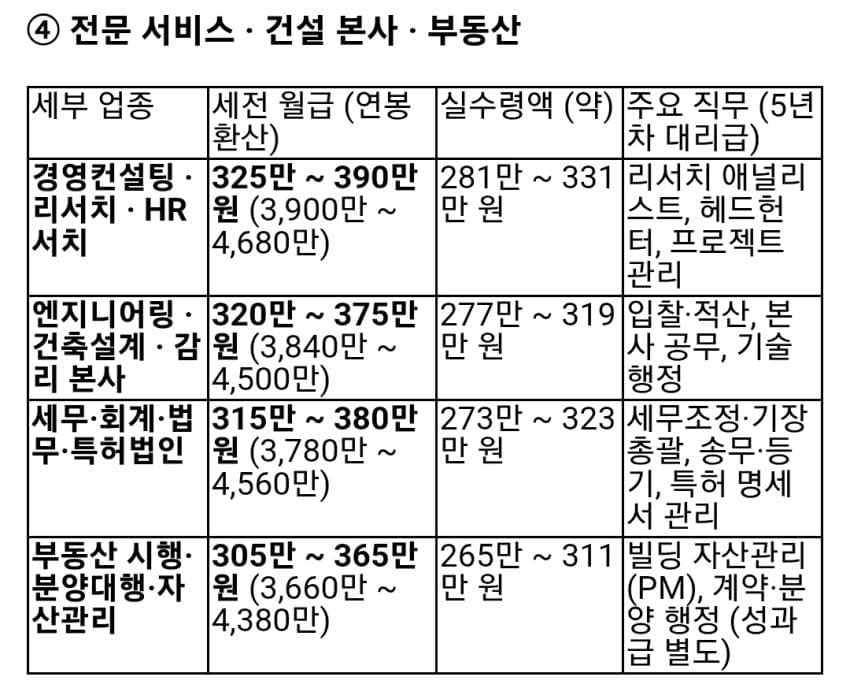
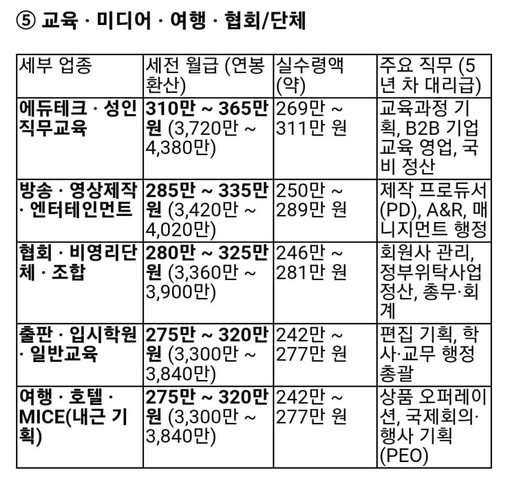
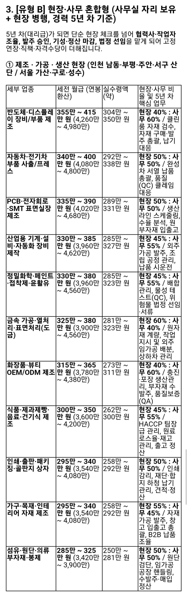
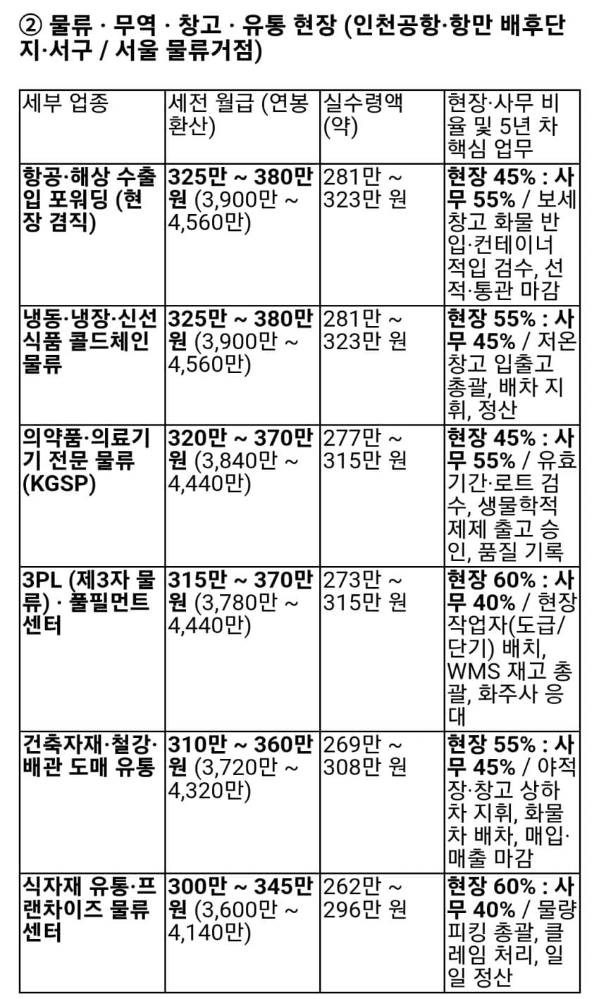
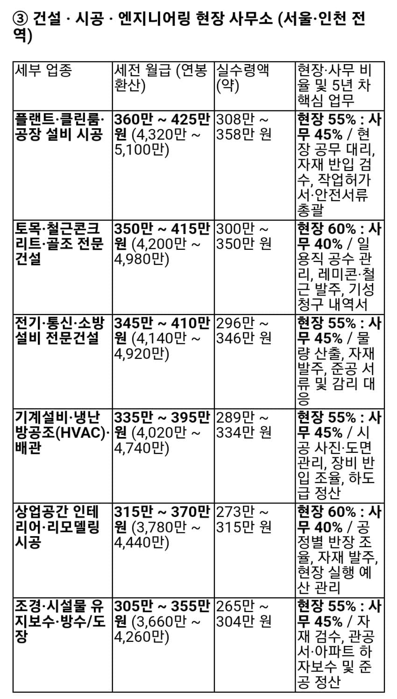
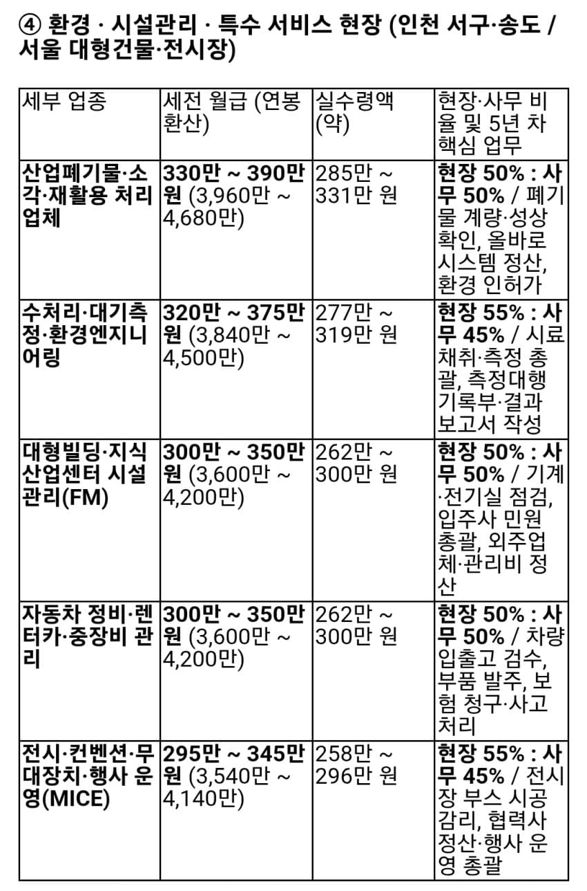
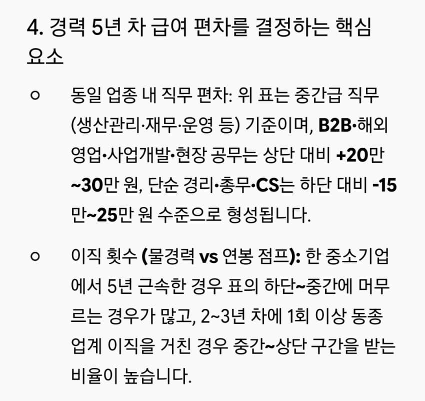
제미나이를 사용해 만들어서 부정확할 수도 있음











댓글
수집 당시 댓글 85개
ㅇㅇ · 11.25 17:57:05
봇치쟝 · 11.25 17:57:09
ㅇㅇ · 11.25 17:57:19
index · 11.25 17:58:00
ㅇㅇ · 11.25 17:58:23
· ㅇㅇ · 11.25 18:00:19
ㅇㅇ · 11.25 18:00:17
· ㅇㅇ · 11.25 18:31:46
ㅇㅇ · 11.25 18:02:39
ㅇㅇ · 11.25 18:03:00
12345 · 11.25 18:04:37
· ㅁㄴㅇ · 11.25 18:09:17
· ㅇㅇ · 11.25 18:10:21
· ㅇㅇ · 11.25 18:35:58
· ㅇㅇ · 11.25 18:47:52
ㅇㅇ · 11.25 18:04:50
ㅇㅇ · 11.25 18:06:26
호두남편 · 11.25 18:06:32
ㅇㅇ · 11.25 18:07:17
ㅇㅇ · 11.25 18:08:26
ㅇㅇ · 11.25 18:08:43
ㅇㅇ · 11.25 18:10:22
ㅇㅇ · 11.25 18:10:24
형아어디가 · 11.25 18:10:45
· 형아어디가 · 11.25 18:11:05
· 형아어디가 · 11.25 18:11:19
· 형아어디가 · 11.25 18:13:29
· 형아어디가 · 11.25 18:13:42
· 형아어디가 · 11.25 18:13:49
· ㅇㅇ · 11.25 18:32:53
· ㅇㅇ · 11.25 18:33:11
ㅇㅇ · 11.25 18:11:41
· ㅇㅇ · 11.25 18:12:12
· ㅇㅇ · 11.25 18:43:51
· ㅇㅇ · 11.25 18:49:35
SonyXperia · 11.25 18:11:44
· ㅇㅇ · 11.25 18:24:31
· SonyXperia · 11.25 18:30:09
히이잉 · 11.25 18:11:54
ㅇㅇ · 11.25 18:14:22
ㅇㅇ · 11.25 18:15:36
ㅇㅇ · 11.25 18:17:00
ㅇㅇ · 11.25 18:18:43
· ㅇㅇ · 11.25 18:19:34
히이잉 · 11.25 18:21:54
dd · 11.25 18:21:57
ㅇㅇ · 11.25 18:23:12
ㅁㄴㅇ · 11.25 18:23:47
Rumble · 11.25 18:24:07
dd · 11.25 18:25:27
· dd · 11.25 18:29:00
· ㅇㅇ · 11.25 18:32:30
· ㅇㅇ · 11.25 18:33:26
· ㅇㅇ · 11.25 18:45:43
· ㅇㅇ · 11.25 19:19:52
ㅇㅇ · 11.25 18:25:34
ㅇㅇ · 11.25 18:31:02
· ㅇㅇ · 11.25 18:35:03
· ㅇㅇ · 11.25 18:39:59
· ㅇㅇ · 11.25 19:01:28
거란족 · 11.25 18:31:33
ㅇㅇ · 11.25 18:31:39
ㅇㅇ · 11.25 18:36:29
· ㅇㅇ · 11.25 18:54:55
· ㅇㅇ · 11.25 19:00:39
· ㅇㅇ · 11.25 19:05:31
마유미 · 11.25 18:37:19
돌아온애우 · 11.25 18:39:11
ㅇㅇ · 11.25 18:43:12
ㅇㅇ · 11.25 18:48:14
ㅇㅇ · 11.25 18:49:28
ㅇㅇ · 11.25 18:49:40
· ㅇㅇ · 11.25 20:57:47
너도나도죽창한방 · 11.25 18:51:44
ㅇㅇ · 11.25 19:05:44
ㅇㅇ · 11.25 19:18:12
ㅇㅇ · 11.25 19:20:22
매화설 · 11.25 19:21:29
히이잉 · 11.25 19:25:56
향격쳐 · 11.25 19:27:53
ㅇㅇ · 11.25 19:47:03
ㅇㅇ · 11.25 20:15:49
ㅇㅇ · 11.25 20:20:08
ㅇㅇ · 11.25 20:51:37
ㅇㅇ · 11.25 20:59:58